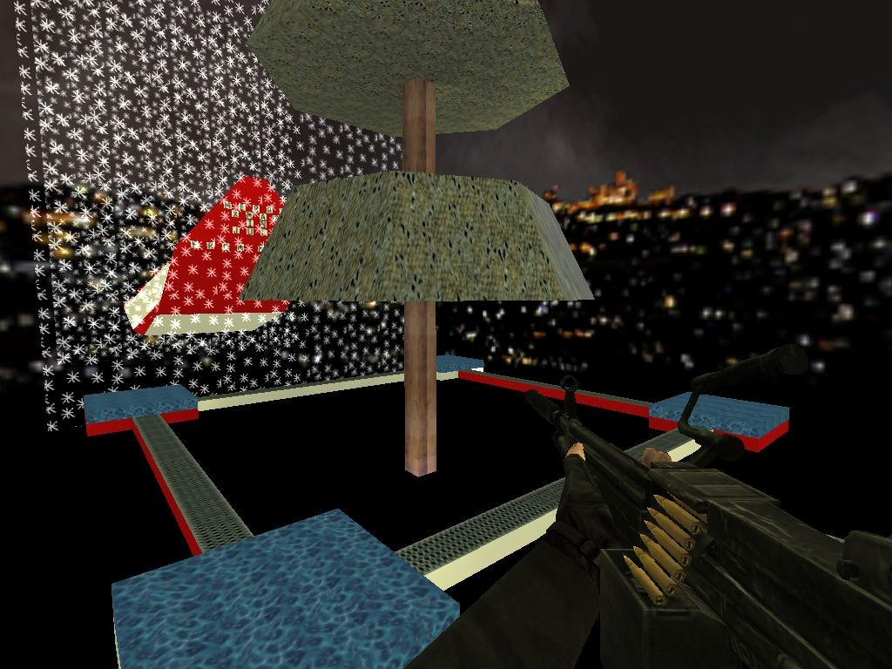

[23-12-2023] |cs-surf-archive.github.io
cs-surf-archive.github.io is a site I built to aid in a community effort to archive a piece of niche gaming history, and credit authors with their creations. This article discusses how the site came to be. Information on the site's interesting tech stack can be found in another article.
I've been playing movement based games for as long as I've been playing video games. Quake 3 DeFRaG, Warsow, Counter-Strike surfing, Half-Life bunnyhopping, Tribes, basically anything that has an interesting and fluid movement mechanic.
|
Counter-Strike surfing was my first introduction to this style of gaming in 2004. I clearly remember surf_christmas being the first surf map I ever played. |

surf_christmas in Counterstrike 1.6
|
In 2017 I was contacted by a user by the name of NeXxXuS on Youtube, Twitch, and Steam asking if I knew the whereabouts of Simplysped, an early surf map creator. Naturally that freaked me out a little and I just never responded.
In early 2023 I saw KingYoshi post in the surf content creator Repster's discord asking if we knew who created surf_skyworld. Skyworld is an incredibly popular trick and combat surf map. I love a good mystery so we started digging.
Along with another surfer IrynStyl, we dug up everything we could over the period of a couple months. The deepest we got was finding textures in maps referencing long gone websites for surf clans, then using the wayback machine to read through the forums. Posts mentioning map names were used by Yoshi to build a list of known maps that no known file exists for.
After a couple months, we were confident that a user named Harvey created Skyworld. We determined this from a combination of a 17 year old youtube video, records on the now defunct BrokenSurf forums, and a general similarity in mapping.
I decided to see if NeXxXuS was still around, 6 years later, to let him know our findings. He got back to me the same day and said it wasn't Harvey.
During all this, we dug up an enormous amount of maps and filled in the blanks for our list of "maps without downloads". We started keeping records in Discord, but it wasn't going to scale well. I suggested we use a spreadsheet with a strict format. Yoshi took the spreadsheet idea and ran with it.
I got started building the website. Using a Google Sheet allowed me to get data using the Google Sheets API, parse it, and output a website using HTML. A series of other scripts allowed me to make sure the Google Drive we used matched up with the data in the spreadsheet.
Over the course of the next year, a bunch of us did some incredible detective work to find long lost maps. I was able to rip all .txt files from map packs we'd found to get e-mails, names, clans, etc. Yoshi and NeXxXuS would track mappers down in hopes of getting any further inf.
As of writing this article, we have 356 unique maps. Most are very hard to find, and some like surf_commune_beta4 can only be found on our site. Yoshi and NeXxXuS are still working to find more pieces of surf history.
Digital archival is important, and I am proud to have played a part in this effort.
HOME